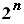

Курсов проект
- INF296
на Мартин
Руменов Ахчиев, FN 14050
версия 0.1 от 19.06.2003 г.
1.Текст на задачата; използват се файлов вход и изход.
2. Програма за решаване на задачата -
A.CPP, B.CPP,
C.CPP Реализиран са два метода - рекурсия и динамично оптимиране.
Вариант 1
Вариант 2
Вариант 3
3.Файлов вход и изход;
4.Използван е компилатор Dev-C++ 4.9.6.0.
5.Сложност на алгоритмите:
В общия случай алгоритъма е със
сложност O(n.S). Тя зависи едновременно от броя на монетите n и от общата
им стойност S, и можем да я разглеждаме като полиномиална относно n. Ако
М е максималната стойност на монетата измежду дадените. Тогава: S≤M.n
и n.S≤n².M Тогава сложността на алгоритъма е от порядъка
на O(n²), което е многократно по - добро от
O( 
) при варианта с изчерпване. Когато времето за работа е квадратично,
алгоритъма може да се използва практически само за малки задачи. Когато
n e хиляда, времето за работа е един милион. Когато n се удвоява, времето
за работа се увеличава четрикратно. Алгоритъма с експоненциално нарастване
практически няма приложение, а и прилагането на решения с груба сила не
е много елегантно. Когато n e двайсет, времето за работа е един милион.
Когато n се удвои, времето за работа се повдига на квадрат.
n = 10
|
0.000001 сек.
|
n = 100
|
0.0001 сек.
|
n = 1000
|
0.01 сек.
|
n = 10000
|
1.071 сек.
|
n = 100000
|
106.543 сек.
|
n = 1000000
|
10663.6 сек.
|
6. Входен файл
file1.inp с тестови примери; изходен файл file1.out за примерите от входния файл.
7. Гранични случаи - входен файл
file2.inp, изходен файл
file2.out.
8. Предложение за:
- входен файл
file3.inp за жури за състезание по програмиране;
- изходен файл
file3.out за примерите от входния файл;
- контролно време за работа на програмата за решаване
на примерите - под 1 секунда и за трите примера.
*решенията на рекурсивните програми
не са ефективни за входини файлове с повече от един пример,тъй като
за
прекъсване на рекурсивните обръщения
се използва системната функция ( exit(1) ).
Използвана литература:
1."Основи на компютърните алгоритми" - Преслав Наков
2."Проектиране и анализ на компютърни алгоритми" - Преслав и Светлин Накови,
Панайот Добриков ( ФМИ, СУ )
3."Алгоритми на 'C' ", Том 1 - Робърт Седжуик